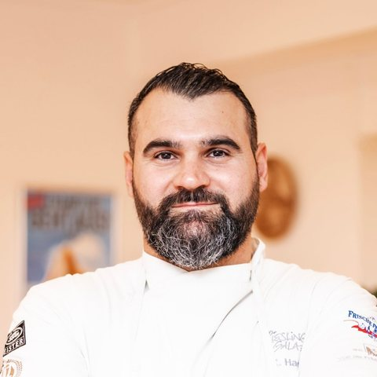

GiulioUnterwegs
Koch · Gastgeber · Frankfurt
Ich besuche Frankfurts Cafés, Bistros und Restaurants – probiere, frage nach und zeige euch, was mich begeistert.
Neu: Folge 1 – Rama V ist online- Euer Laden in der ShowIn der Gründungsphase kostenlos
- Die FolgenNeu: Folge 1 · Rama V
- Über unsEin Koch, eine Kamera, eine Stadt
- Pizzeria GiulioIntzestraße 3b · Osthafen · Route
- Giulio Bistro & BurgerFrühstück & Smash Burger · Halal
- Kooperation anfragenFür Marken, Lieferanten & Events
- TestsiegerF.A.Z.-Pizzatest 2021
- 4,9 ★rund 2.300 Bewertungen
- Nr. 1Beliebteste Pizza · Frankfurt-Tipp
Kontakt